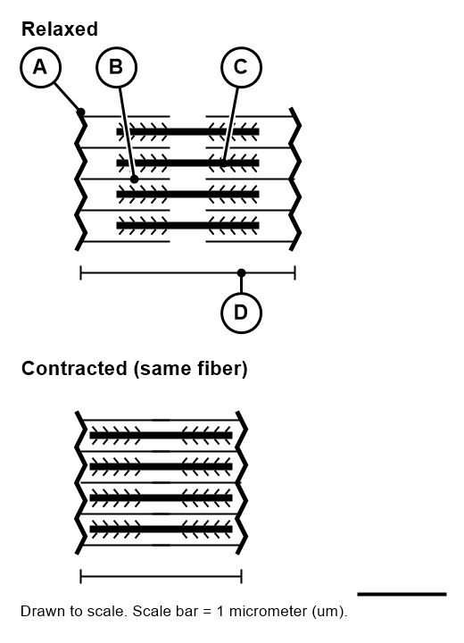

Sliding Filament Theory and Muscle Contraction
A sarcomere has thick filaments (myosin) and thin filaments (actin). When a muscle contracts, the sarcomere gets shorter. Predict: do the filaments themselves get shorter, or do they slide past each other? Explain your guess in one or two sentences.
Today's goal
Students will be able to explain how a sarcomere shortens, by tracing the four-step cross-bridge cycle using a diagram, so that they can explain why muscles need both calcium and ATP to work — and what goes wrong when one is missing.
- I can describe what the sliding filament theory says happens to actin and myosin.
- I can put the four steps of the cross-bridge cycle in order and explain each one.
- I can explain why a muscle needs both calcium and ATP to contract.
Every move you make
Picking up a backpack. Blinking. Running to catch a bus. Every one of these depends on the same microscopic event happening billions of times: a sarcomere shortening.
Today you'll find out exactly what happens inside a muscle fiber to make that shortening happen — and what can go wrong.
The sarcomere
- A sarcomere is the smallest unit that contracts in a skeletal muscle fiber.
- Thick filaments are made of the protein myosin.
- Thin filaments are made of the protein actin.
- Thin filaments also carry troponin and tropomyosin, two proteins that cover the spots where myosin can attach.

The filaments do not get shorter.
The thin filaments slide past the thick filaments, pulling the ends of the sarcomere closer together. The filaments are the same length whether the muscle is relaxed or contracted. Only the overlap changes.
This sliding happens at many sarcomeres at once, all along a muscle fiber. That is why the whole muscle shortens.
Where does the "shortening" happen?
If the filaments themselves never get shorter, where does the shortening actually happen? Point to it on the diagram.
Calcium
Attach, then pull
Release, then reset
Act out the cycle
Make a fist (myosin head). Your partner holds out a flat arm (actin).
One pull is not enough
- One power stroke pulls the filament only a short distance — like one pull of a rope.
- As long as calcium stays high and ATP is available, myosin heads attach, pull, release, and reset again and again.
- Thousands of these cycles happen at the same time, all along the sarcomere.
Without ATP, myosin heads cannot let go of actin. Without calcium, the binding spots stay covered and no cross-bridges can form.
A classmate's claim
What is wrong with this claim? Write the correction in your notebook using the word overlap.
Plenty of ATP, very little calcium
Claim: will this muscle contract normally, weakly, or not at all? Support your claim with at least one part of the cross-bridge cycle.
One cycle, three jobs
The cross-bridge cycle you learned today is the same in every skeletal muscle contraction. Tomorrow you'll see how muscles use it differently depending on the job: shortening, staying the same length, or lengthening under control.

Before you leave
In your own words, describe what "sliding filament" means. Use the words actin, myosin, and sarcomere.
Weekly warm-up and exit ticket page
Record today's warm-up and exit ticket on your weekly page. It is turned in on Fridays.